ស្វែងយល់ពីរសជាតិអស្ចារ្យ ភាពចម្រុះ និងអត្តសញ្ញាណម្ហូបអាហារដ៏សម្បូរបែបមកពីគ្រប់ទសទិសទីនៃព្រះរាជាណាចក្រកម្ពុជា
ម្ហូបជាតិដ៏ល្បីល្បាញប្រចាំខេត្តសៀមរាប ផ្សំពីសាច់ត្រីស្រស់ៗពីបឹងទន្លេសាប ខ្ទិះដូង និងគ្រឿងគ្រឿហ្វ ខ្ចប់ស្លឹកចេកចំហុយយ៉ាងមានក្លិនឈ្ងុយឈ្ងប់。
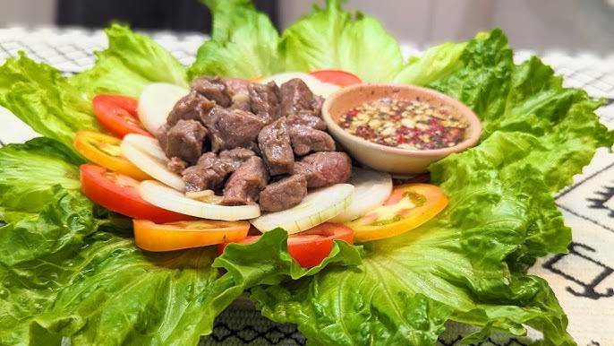
ម្ហូបដ៏ពេញនិយមបំផុតនៅរាជធានីភ្នំពេញ សាច់គោជ្រក់ទន់ៗឆាជាមួយបន្លែស្រស់ ញ៉ាំជាមួយទឹកជ្រលក់ម្រេចក្រូចឆ្មា。
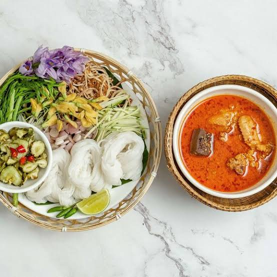
មានប្រភពនិយមខ្លាំងនៅតំបន់ក្រុងតាខ្មៅ និងខេត្តកណ្តាល ញ៉ាំក្តៅៗជាមួយនំបុ័ងស្រួយ ឬបាយស ឈ្ងុយគ្រឿងការីពិសេស。
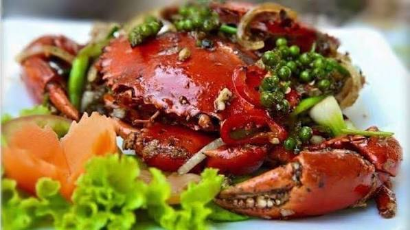
ការរួមបញ្ចូលគ្នារវាងក្តាមសមុទ្រស្រស់ៗពីខេត្តកែប និងម្រេចខ្ចីល្បីឈ្មោះលំដាប់ពិភពលោកពីខេត្តកំពត ផ្តល់នូវរសជាតិហឹរក្រអូបឈ្ងុយឆ្ងាញ់。
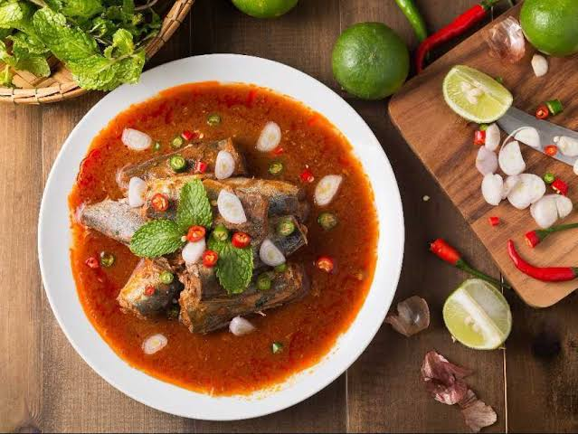
ម្ហូបប្រចាំតំបន់ឆ្នេរ ប្រើប្រាស់ត្រីសមុទ្រស្រស់ៗជាមួយគ្រឿងគ្រឿហ្វ និងរំដេងស្លឹកគ្រៃ ផ្តល់រសជាតិជូរអែមឆ្ងាញ់ត្រជាក់ចិត្ត。
សាច់គោខ្ពង់រាបមានគុណភាពខ្ពស់ អាំងលើភ្លើងរោទិ៍តិចៗ ញ៉ាំជាមួយទឹកប្រហុកបុកផ្ទាល់ដៃតាមបែបប្រពៃណីជនជាតិដើមភាគតិច。
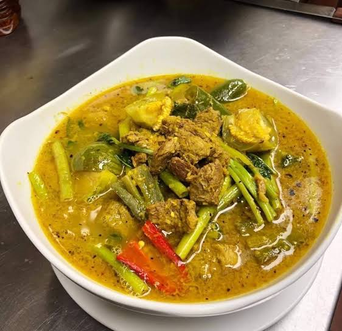
ប្រើប្រាស់ត្រីយក្ស ឬត្រីធម្មជាតិពីទន្លេមេគង្គលើ ផ្សំជាមួយម្ទេសដៃនាង និងស្លឹកក្របៅមានរសជាតិជូរស្រទន់ឆ្ងាញ់ប្លែក。
មុខម្ហូបសម្រន់ដ៏ល្បីប្រចាំខេត្តបាត់ដំបង មានរសជាតិជូរអែម ឈ្ងុយឆ្ងាញ់ប្លែកមាត់ និងណែមត្រីស្រស់ៗធ្វើតាមបែបប្រពៃណី。
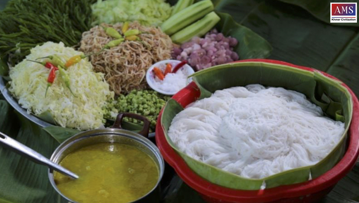
នំបញ្ចុកស្រស់ៗញ៉ាំជាមួយសម្លខ្មែរប្រយោជន៍ ឬទឹកប្រហុកបុកលាយបន្លែធម្មជាតិស្រស់ៗតាមដងទន្លេមេគង្គ。
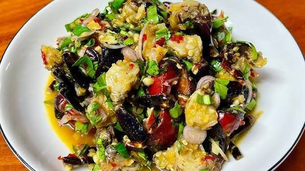
ល្បីល្បាញខាងផលនេសាទពីបឹងទន្លេសាប ជាពិសេសត្រីឆ្អើរ និងក្ដាមប្រៃមានរសជាតិដិត ឈ្ងុយឆ្ងាញ់ស័ក្តិសមញ៉ាំជាមួយបាយក្តៅៗ。
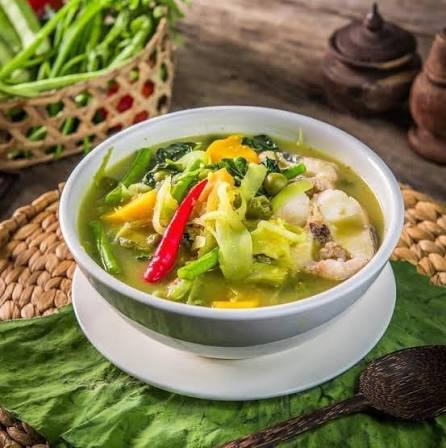
មុខម្ហូបប្រពៃណីបងប្អូនជនជាតិដើមភាគតិច ប្រើប្រាស់គ្រឿងទេសព្រៃ និងបន្លែធម្មជាតិប្រចាំតំបន់ឦសាន。
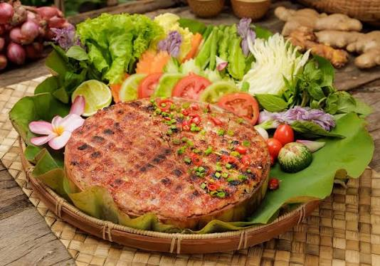
តំបន់សម្បូរត្រី និងបក្សីទឹក ធ្វើជាមុខម្ហូបអាំង ឬចិនឆាមានរសជាតិស្រស់ឆ្ងាញ់ពីធម្មជាតិ。
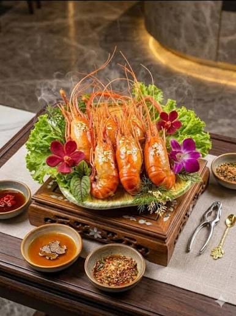
បង្កងធម្មជាតិដ៏ល្បីល្បាញមានសាច់ផ្អែមណែន និងខួរច្រើន អាចយកទៅដុត អាំង ឬឆាគ្រឿងយ៉ាងមានឱជារស。
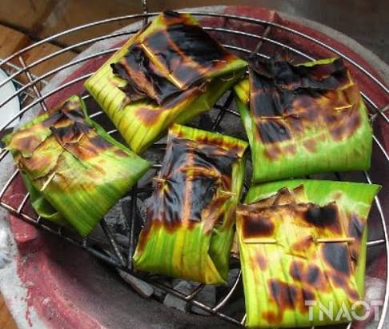
តំបន់ប្រហុកដ៏ល្បីល្បាញប្រចាំប្រទេសកម្ពុជា យកប្រហុកសាច់មកខ្ចប់ស្លឹកចេកអាំង ឬចំហុយ ញ៉ាំជាមួយអន្លក់បន្លែស្រស់ៗ និងបាយក្តៅៗ。
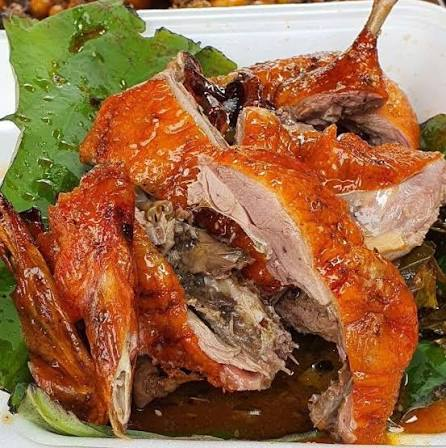
ម្ហូបសម្រន់ និងអាហារពេញនិយមប្រចាំខេត្ត មានសាច់ទាខ្វៃស្បែកស្រួយ ញ៉ាំជាមួយជ្រក់ និងនំប័ងប៉ាតេដែលមានរសជាតិដិតឈ្ងុយឆ្ងាញ់。